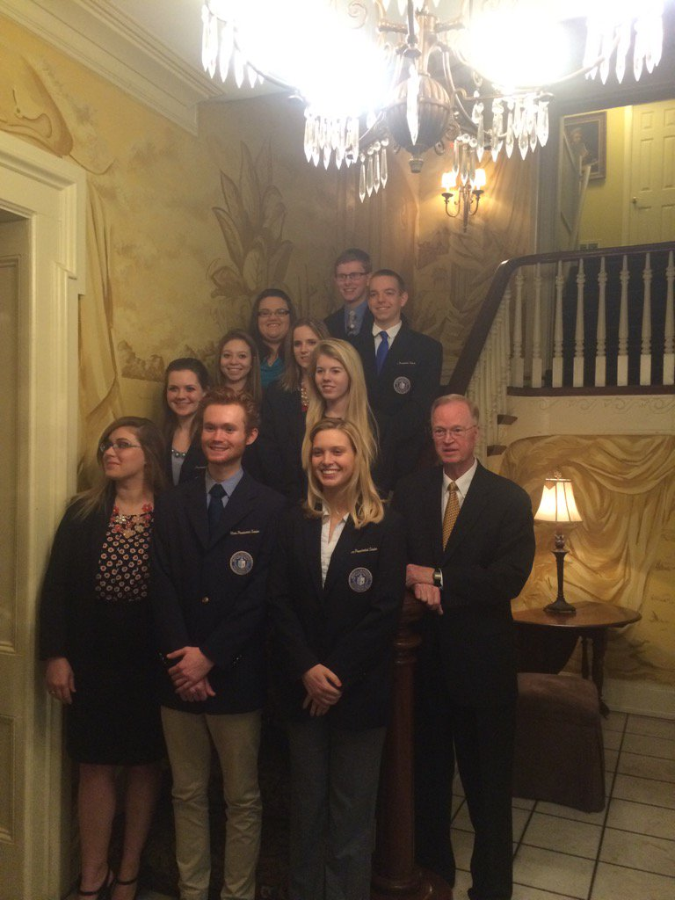
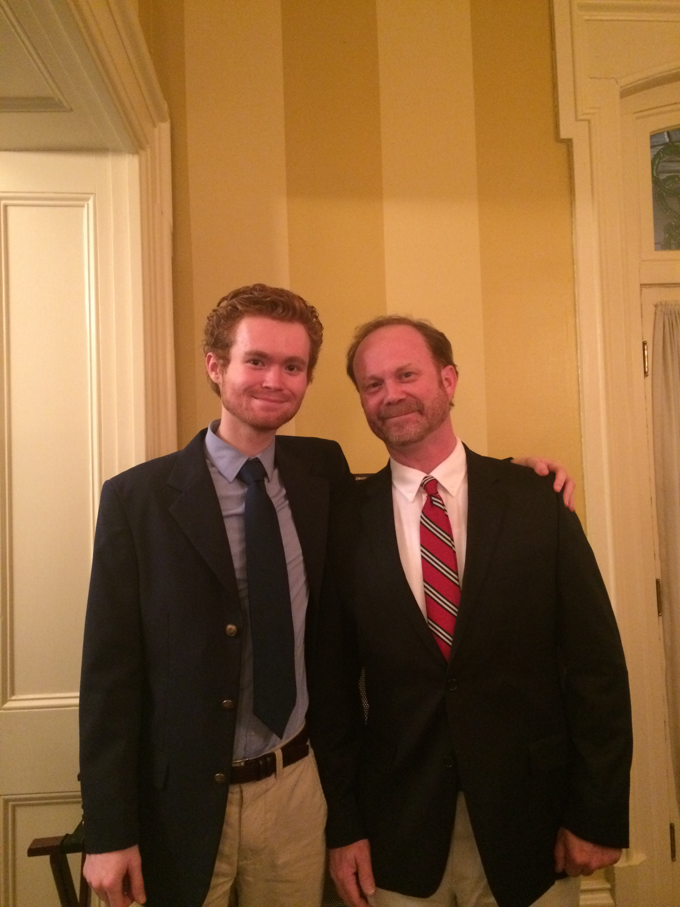
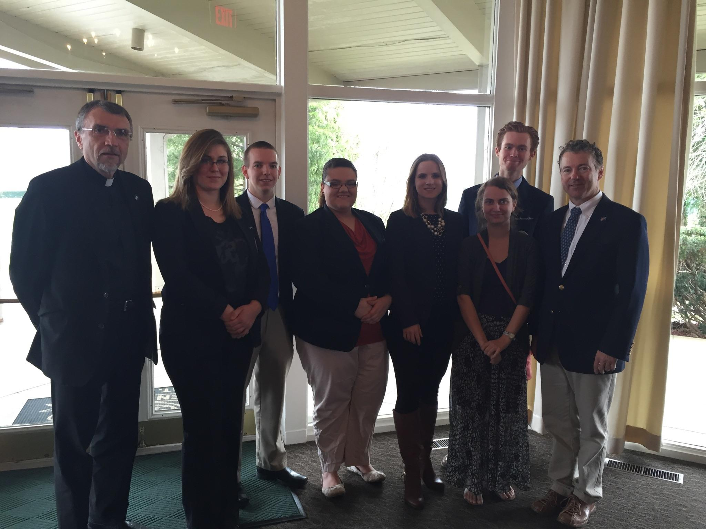
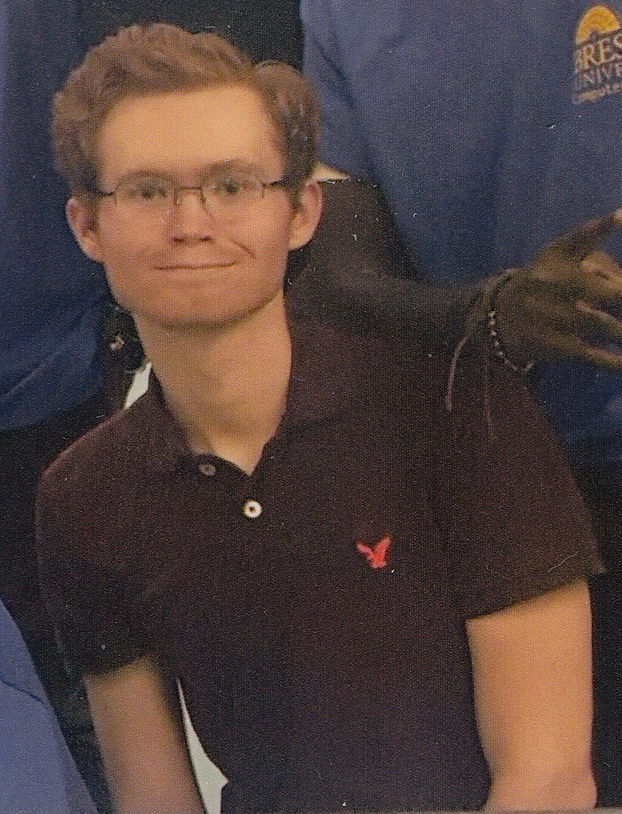

Hello, welcome to my site! I am Dakota Barron, a 20 year old computer science student at Brescia University in Owensboro, KY. I was originally born in Charleston, SC where my dad and his family are from. I have two younger sisters, Shelby and Savannah. When I was about three years old my family moved to Branson, MO. We lived there for two years and then we moved to Jonesboro, AR. The memories of that time will always stay with me because I made some really great friends there. I ended up moving back to South Carolina for my first year of high school. I went to high school for two years there and then moved to Hopkinsville, KY where I graduated in 2014 from Christian County high school. 
After graduating high school, I came to Brescia University as a freshman in the fall of 2014. I immediately declared my major of computer science. Computer science has always been a subject which has fascinated me and therefore it was a natural choice for my major. My first year at Brescia I took the programming 1 class and since then have loved programming.  I enjoy creating all sorts of programs and software. My goal is to one day work as a software developer. I believe that software can transform people's lives and improve the quality of their life. For this reason it is very satisfying to me to create software and then witness other people use and enjoy your software.
I am currently a junior at Brescia. In my 2 years completed here so far, I have learned more than I ever thought that I would.  The computer classes that I have taken have really opened my eyes to just how exactly a computer works. I had no real knowledge of this before I came to Brescia.  I feel like coming to Brescia has been the best decision of my life so far. Brescia is preparing me to face the real world once I graduate. I sure was not ready to handle this sort of responsibility just a few years ago but Brescia has taught me the skills I need in order to succeed.
Other useful links...


Brescia

Owensboro

Telephone